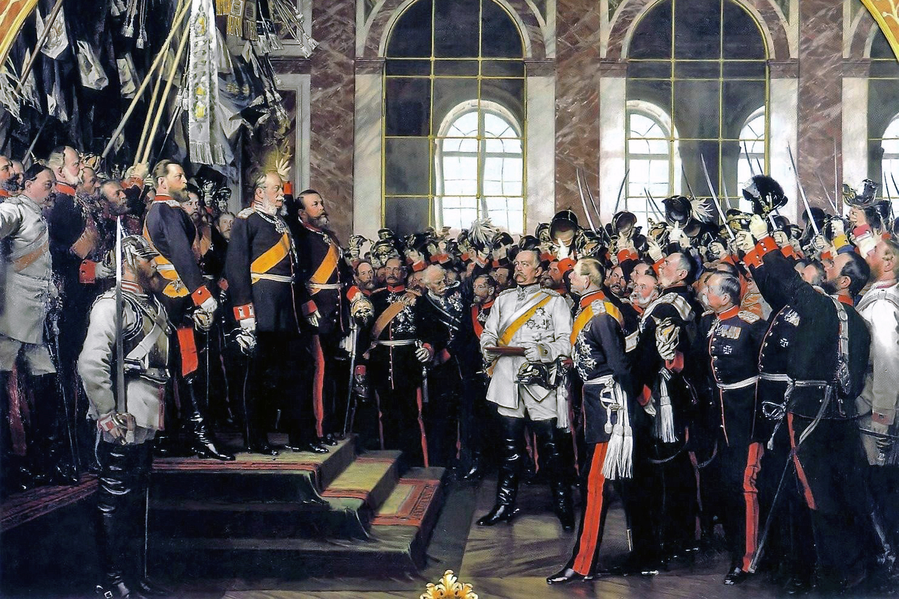

Meoncross School | History Department
Edition 2026.1
How did decades of imperial rivalry and fear culminate in thirty days of madness?
KS3: Causes of the Great War
PROGRESS & ASSESSMENT TRACKER Target Grade: _________
| Level |
Emerging (1-2) |
Emerging+ (3) |
Expected (4-5) |
Expected+ (6-7) / Greater Depth (8-9) |
| Lesson / Assessment Title |
Effort |
Level |
Teacher Comments |
| L1: How was the German Empire created in 1871? | | | |
| L2: How did the Franco-Prussian War create a lasting legacy of hatred? | | | |
| L3: To what extent did the 'Scramble for Africa' increase tension in Europe? | | | |
| L4: Why did a battleship building contest destroy Anglo-German relations? | | | |
| L5: Did the Alliance System protect Europe or guarantee a global war? | | | |
| L6: Why did thirty days in July 1914 lead to world war? | | | |
| Assessment: End of Unit Assessment: The Historians' Debate | | | |
| Final Unit Grade: |
|
|
|
L1: How was the German Empire created in 1871?
Learning Objectives
Understand how Otto von Bismarck used 'blood and iron' to unify the German states.
Analyze the geographical impact of the new German Empire on the balance of power in Europe.
Q1. Look at the A4 map provided. Why might the geographical location of the new German Empire cause fear for both Germany and its neighbors?
Vocabulary Check
The Odd One Out: Select THREE terms that share a close historical connection. Identify which ONE remaining term is the 'Odd One Out' in this lesson, and explain your historical reasoning:
Unification | Prussia | Chancellor | Blood and Iron | Realpolitik | Kaiser
Q2. Decision Dilemma: You are Otto von Bismarck in September 1862. The Prussian parliament refuses to fund the army. Choose your path.Decision Dilemma
Evaluate the three historical choices facing Bismarck in 1862. Decide how to proceed and identify the calculated risk.
Option A: Surrender to Parliament (Liberal Consensus)
Obey the liberal majority in parliament, cancel army expansion, and attempt to unite Germany through peaceful speeches and elections.
Option B: Resign and Retreat (Austrian Dominance)
Resign as Minister President, allowing the Catholic Austrian Empire to remain the undisputed diplomatic master of the German Confederation.
Option C: Rule by Decree & Unleash Blood and Iron (The Autocratic Path)
Bypass parliament, collect taxes unilaterally, rapidly modernize the army with Krupp artillery, and prepare to forge unity through war.
Calculated Risk: What was the colossal calculated risk of choosing Option C (unilateral military expansion)?
The primary risk was that if Prussia lost a war against Austria or France, Bismarck would face... Q3. The Three Wars: Trace the kinetic domino chain that eliminated Prussia’s rivals and forged the German Empire.Causal Chain
Trace the 3 sequential wars orchestrated by Bismarck. Note how each victory removed a foreign obstacle to unification.
War 1
1864
The Danish War
Prussia and Austria defeat Denmark; Prussia seizes Schleswig to test its modernized railway logistics.
➜
War 2
1866
Austro-Prussian War
Prussia crushes Austria in just 7 weeks; Austria is expelled from German affairs, creating the North German Confederation.
➜
War 3
1870–71
Franco-Prussian War
Bismarck baits Napoleon III into war; southern German kingdoms rally behind Prussia to defeat France.
➜
Empire
1871
Proclamation of Kaiserreich
The German Empire is proclaimed at Versailles, shattering the European balance of power.
Q4. Visual Anatomy: Study Anton von Werner's painting of the 1871 Versailles proclamation. Identify the 4 key figures and militaristic symbols.Visual Anatomy
Using paragraph [4.2] and Anton von Werner's painting, annotate the 4 key details below to explain how this image reveals that Germany was forged by 'blood and iron'.

Anton von Werner, Proclamation of the German Empire at Versailles, 18 January 1871 (Friedrichsruh version, 1885).
1
Otto von Bismarck (Center in White)
Why is Bismarck wearing a brilliant white uniform in the dead center, rather than the Kaiser?
Bismarck is placed dead center in pristine white to show that...
2
Kaiser Wilhelm I on the Dais
Who stands on the elevated platform on the left, and who is acclaiming him?
Kaiser Wilhelm I stands elevated beside the Grand Duke of Baden, who...
3
The Hall of Mirrors (Versailles)
Why was holding this coronation inside France’s royal palace a deliberate geopolitical insult?
The Hall of Mirrors was the palace of French kings; holding it here...
4
Raised Spiked Helmets (Pickelhauben)
What does the crowd of cheering generals and drawn sabres reveal about the new state?
The sea of raised swords and spiked helmets demonstrates that Germany was unified by...
Assessment Practice: Explanatory Causation Paragraph
Pair & Share Activity
Q5. Prompt: Discuss with your partner: Was the German Empire created 'from below' by the people or 'from above' by military force?
Think: Spend 1 minute quietly considering the question and forming your own opinion.
Q6. Explain why Otto von Bismarck's policy of 'Blood and Iron' was successful in unifying Germany by 1871.[12 marks • 15 mins]
PEE/PEEL Structure Strip & Hints:- Point 1: Rejection of Liberalism — Bismarck bypassed parliament and funded the army unilaterally to prioritize military force over democratic debate.
- Point 2: Industrial & Military Modernisation — Prussian railways for rapid mobilization and Krupp steel breach-loading artillery.
- Point 3: Three Decisive Wars (1864, 1866, 1870) — Defeating Denmark, excluding Austria, and uniting southern German states against a common French enemy.
- Point 4: Crowned at Versailles — Proclamation of the Kaiserreich on 18 January 1871, permanently shifting the European balance of power.
L2: How did the Franco-Prussian War create a lasting legacy of hatred?
Learning Objectives
Identify the penalties forced upon France in 1871.
Explain how the Ems Telegram sparked the Franco-Prussian War.
Evaluate the long-term impact on European relations.
Q1. How does Bettannier use the classroom setting to prove that the Franco-Prussian War of 1871 had not truly ended?
Chronological Domino Flowchart
Score: / 5
Task: The historical events below are out of order. Read them carefully, then use your pen to draw arrows connecting the boxes in the correct chronological and causal order (Event A ➔ Event B ➔ Event C...).
1871
The Unification of Germany
The Franco-Prussian War
June 1914
The Spark in Sarajevo
The Assassination of the Archduke
1897
Imperial Rivalries
The Place in the Sun speech
1907
Encirclement & Alliances
The Triple Entente System
1906
The Naval Arms Race
The Launch of HMS Dreadnought
1. Looking at this long-term timeline, which factor do you think was the most dangerous necessary cause of the war?
Vocabulary Check
The Golden Sentence: Choose TWO terms from the word bank. Write ONE grammatically sophisticated, historically accurate sentence connecting them using a causal conjunction (because, although, or consequently):
Ems Telegram | Siege | Reparations | Alsace-Lorraine | Revanchism | Treaty of Frankfurt
Q2. The Ems Dispatch: Trace the kinetic chain that baited Napoleon III into declaring war. Complete the missing causal explanation in Step 3.Causal Chain
Using paragraphs [1.2] and [1.3], trace how Bismarck baited France into declaring war, completing the missing causal explanation in Step 3.
Step 1: Catalyst
July 1870
Spanish Throne Crisis
Leopold of Hohenzollern withdraws his candidacy, but France arrogantly demands a permanent guarantee from Prussia.
➜
Step 2: Confrontation
13 July 1870
The Bad Ems Meeting
Ambassador Benedetti accosts King Wilhelm I on the spa promenade demanding a personal pledge.
➜
Step 3: Manipulation
14 July 1870
Bismarck's Editorial Scalpel
Bismarck shortens the telegram to make the King appear to insult the French ambassador.
Explain why shortening the telegram provoked French public outrage and unified the German states:
➜
Step 4: Outbreak
19 July 1870
War Declaration & Unity
France declares war; southern German kingdoms rally behind Prussia to defend the fatherland.
Q3. Visual Anatomy: Study Albert Bettannier’s painting 'The Black Stain' (La Tache Noire). Annotate the 4 key symbols of French mourning and patriotic revanchism.Visual Anatomy
Using paragraph [2.3] and Albert Bettannier’s painting (Source A), annotate each numbered detail to explain how French schools prepared the next generation for war.

Albert Bettannier, La Tache Noire (The Black Stain, 1887, Musée d’Orsay, Paris).
1
The Black Stain (Alsace-Lorraine on the Map)
Why is Alsace-Lorraine shaded in pitch black on the classroom map of France?
Alsace-Lorraine is blacked out to represent...
2
The Schoolmaster in Mourning
What is the role of the teacher in his solemn black frock coat pointing with the rod?
The schoolmaster acts as an agent of state indoctrination by...
3
The Cadet Student in Uniform
Notice the student beside the teacher wearing a dark military cadet uniform. What does this reveal?
The cadet uniform demonstrates that French schools had introduced...
4
The Military Cross of Honour
Look at the military medal pinned to the top pupil on the right. What message did this send to children?
The medal rewards academic and patriotic excellence, signaling that...
Q4. Forensic Scalpel: Interrogate Source B (Bordeaux Declaration). Extract the exact phrase swearing permanent French resistance against German annexation.Forensic Scalpel
“We proclaim forever inviolable the right of Alsatians and Lorrainers to remain members of the French nation, and we swear for ourselves and our descendants to claim it eternally against the usurper.”
Underline in the source text above, then copy the exact 3–6 word "smoking gun" quote:
[ “ . . . . . . . . . . . . . . . . . . . . . . . . . . . . . . . . . . . . . . . . . . ” ]
Why is this phrase decisive? Why did this specific oath guarantee that the peace treaty of 1871 was merely an armed truce rather than a lasting peace?
This oath guaranteed future war because by swearing for their descendants to claim the land eternally... Q5. Forensic Ledger: Contrast Germany’s short-term economic and military gains against its long-term diplomatic perils from seizing Alsace-Lorraine.Forensic Ledger
Using paragraphs [3.1] and [3.3], complete the balance sheet below weighing the strategic benefits against the fatal long-term dangers.
| Short-Term German Economic & Military Gains |
Long-Term Geopolitical Perils (1871–1914) |
|
• 80% of France's iron ore basins and coal mines
|
• Guaranteed permanent French revanchism (hatred)
|
|
• Vosges mountains provided a natural fortress barrier
|
• Drove isolated France into military alliance with Russia (1894)
|
|
• 1.5 million industrious taxpayers added to Kaiserreich
|
• Created the dreaded two-front encirclement of Germany
|
Q6. Enquiry Essay: "To what extent was the outbreak of the First World War in 1914 the inevitable consequence of the Franco-Prussian War of 1870–71?"
Historian's Corner: The 'Master Planner' Debate
Historians debate whether Bismarck was a genius 'master planner' who plotted the Franco-Prussian War years in advance, or merely a brilliant opportunist who reacted to events (like the Ems Telegram) as they happened. A.J.P. Taylor famously argued Bismarck just rode the wave of events.
Q7. How does A.J.P. Taylor's view of Bismarck as an 'opportunist' challenge the traditional narrative that the Franco-Prussian War was meticulously planned?
Writing Practice
Pair & Share Activity
Q8. Prompt: Of the three penalties forced upon France in the 1871 treaty (loss of land, 5 billion franc fine, German occupation), which do you think caused the most bitter resentment, and why?
Think: Jot down your choice and one strong reason to support it.
Q9. How useful are Sources A and B for an enquiry into the reasons for French hatred of Germany after 1871? [8 marks • 10 mins]
Source AAdapted from a French school textbook, published in Paris, 1885.“We must never forget the humiliation of 1871. The German Empire was proclaimed in our own Palace of Versailles, tearing away the bleeding wounds of Alsace and Lorraine. They have stolen our iron and our factories, and forced us to pay a crushing ransom of 5 billion francs. Every French child must grow up with one single thought: to rebuild our army and take back what was stolen from the motherland.”
Source BAdapted from a private letter written by German Chancellor Otto von Bismarck to a fellow diplomat, 1872.“France will never forgive us for taking Alsace-Lorraine. The peace we have forced upon them has left a bitter resentment that will not fade. We must accept that a French war of revenge is a certainty in the future. Therefore, our entire diplomatic focus must be to ensure she never finds an ally to help her take it back. As long as France remains diplomatically isolated, particularly from Russia, Germany will remain secure.”
L3: To what extent did the 'Scramble for Africa' increase tension in Europe?
Learning Objectives
Identify the main European colonial powers and their territories.
Explain how Kaiser Wilhelm II's 'Place in the Sun' policy threatened Britain.
Evaluate the impact of the Moroccan Crises on the Entente Cordiale.
Q1. Look closely at the man standing over Africa. What is his posture suggesting about imperial ambitions?
Do Now Activity
Score: / 10
1. Who was the first Emperor of the newly unified Germany in 1871?
2. Which brilliant Chancellor united the German states?
3. Which country was humiliatingly defeated in the Franco-Prussian War?
4. What strategic border territory did Germany take in 1871?
5. What is the French word for their desire for revenge?
6. Explain how Bismarck used the Ems Telegram to trap France into a war.
7. Detail the two military advantages the Prussian army possessed.
8. Why was the location of the German Empire's proclamation so humiliating for France?
9. Why did Bismarck weave a complex web of secret alliances after 1871?
10. What was Bismarck's ultimate nightmare scenario?
Vocabulary Check
Conceptual Classification: Categorise the terms from the word bank into the two historical boxes below:
Imperialism | Scramble for Africa | Raw Materials | Berlin Conference | Empire | Colony
Power, Governance & Warfare
Q2. The Scramble for Africa: Trace the kinetic chain from factory industrialization to imperial standoff. Complete the missing causal explanation in Step 3.Causal Chain
Using paragraphs [1.1] and [1.2], trace how industrial factory growth led directly to the partition of Africa, completing the missing causal link in Step 3.
Step 1: Catalyst
1880
Industrial Factory Boom
European factories require massive supplies of rubber, copper, cotton, and captive overseas markets.
➜
Step 2: Diplomacy
1884–85
The Berlin Conference
Fourteen European powers meet in Berlin; Africa is partitioned using arbitrary straight lines without African consent.
➜
Step 3: Exploitation
1885–1908
The Congo Atrocity & German Latecomer Envy
Leopold II exploits the Congo for rubber; Germany feels short-changed by early British and French dominance.
Explain why latecomer Germany felt resentful of Britain and France after the initial Scramble for Africa:
➜
Step 4: Friction
1898
The Fashoda Standoff
Britain and France nearly go to war over the Upper Nile, demonstrating the dangerous friction of imperial rivalry.
Q3. Visual Anatomy: Study John Tenniel's famous Punch cartoon. Annotate the 4 key visual elements showing British anxiety over Germany's 'Place in the Sun'.Visual Anatomy
Using paragraph [2.2] and Source B, annotate each numbered detail to explain how British cartoonists satirized Germany’s imperial ambitions.

Source B: John Tenniel, Punch Magazine. German Chancellor Bismarck / Kaiser Wilhelm satirized as an insatiable schoolboy demanding a share of the colonial cake.
1
The Colonial Cake / Globe
What does the globe / cake sliced into pieces represent in the cartoon?
The sliced cake represents the partition of...
2
The Greedy Schoolboy
Why does the cartoonist portray Germany as an undisciplined child grabbing extra slices?
Portraying Germany as a greedy child suggests that German imperial demands were...
3
John Bull & Marianne at the Table
Notice the established powers watching at the table. How did Britain and France view German demands?
Britain and France viewed their own colonial holdings as established rights, but viewed Germany as...
4
The Discarded Crumbs
Why did German nationalists feel they had been left with only the "crumbs" of empire?
Germany felt cheated because by 1884, Britain and France had already seized...
Q4. Forensic Scalpel: Interrogate Source C (Mansion House Speech). Extract the exact phrase where Lloyd George warns that Britain will choose war over national humiliation.Forensic Scalpel
“then I say emphatically that peace at that price would be a humiliation intolerable for a great country like ours to endure.”
Underline in the source text above, then copy the exact 3–6 word "smoking gun" quote:
[ “ . . . . . . . . . . . . . . . . . . . . . . . . . . . . . . . . . . . . . . . . . . ” ]
Why is this phrase decisive? Why did this specific phrase shock the German government and decisively resolve the Agadir Crisis?
This statement shocked Berlin because Lloyd George had been viewed as a peaceful politician, but here he explicitly warned that... Q5. Enquiry Essay: "To what extent was imperial rivalry during the 'Scramble for Africa' the main cause of rising international tension between 1890 and 1911?"
Historian's Corner: The Primat der Innenpolitik
Some historians (like Eckart Kehr) argue that Wilhelm II's aggressive Weltpolitik was actually driven by domestic politics. By creating foreign enemies, the Kaiser hoped to distract the German working class from voting for socialist parties at home.
Q6. Explain how Eckart Kehr's theory connects Germany's aggressive foreign policy to its internal fears of a socialist revolution.
Assessment Practice: Narrative Account (8 Marks - Chronology & Causation)
Pair & Share Activity
Q7. Prompt: If you were a British politician in 1897, would you view Kaiser Wilhelm's 'Place in the Sun' speech as a direct threat, or just a young leader showing off? Why?
Think: Jot down your view and one piece of evidence.
Q8. Write a narrative account analysing how the Moroccan Crises (1905 and 1911) led to rising tension between Germany, France, and Britain.
You may use the following in your answer:
• The Kaiser’s visit to Tangier and the Algeciras Conference (1905–06)
• The Panther at Agadir and British military preparations (1911)
You must also use information of your own.
PEE/PEEL Structure Strip & Hints:- Paragraph 1 (The Trigger - 1905): Kaiser Wilhelm II visits Tangier to test the Entente Cordiale and challenge French dominance.
- Paragraph 2 (The Diplomatic Backfire - 1906): The Algeciras Conference where Britain and Russia firmly back France, isolating Germany.
- Paragraph 3 (The Escalation - 1911): The Agadir Crisis, sending SMS Panther, Lloyd George's Mansion House speech, and joint Anglo-French naval planning.
- Causal Connectors: Ensure each paragraph explicitly links to the next using "This directly led to...", "As a consequence...", "This culminated in...".
L4: Why did a battleship building contest destroy Anglo-German relations?
Learning Objectives
Identify the significance of the HMS Dreadnought.
Explain the concept of the Two-Power Standard and Risk Theory.
Analyze how naval competition fed mutual suspicion.
Q1. Study the technical blueprint of HMS Dreadnought. Why did this ship make all existing battleships obsolete and reset the naval arms race?
Do Now Activity
Score: / 10
1. What was the name of Kaiser Wilhelm II's aggressive foreign policy?
2. Explain how Wilhelm II's actions during the Moroccan Crises backfired on Germany.
3. Why was the Franco-Russian Alliance a strategic disaster for Germany?
4. Evaluate how the 'Scramble for Africa' increased tensions in Europe.
5. Describe the impact of Britain abandoning its policy of 'Splendid Isolation'.
6. Evaluate the role of Wilhelm II's personality in destabilizing Europe.
7. Who dismissed Otto von Bismarck in 1890?
8. What strategic territory did Germany take from France in 1871?
9. Why did Bismarck weave a complex web of secret alliances after 1871?
10. What was Bismarck's ultimate nightmare scenario?
Vocabulary Check
Spot the Deliberate Error: Read the statement below. One historical fact or vocabulary concept has been deliberately falsified. Underline the error and explain the accurate historical reality below:
Naval Supremacy | Two-Power Standard | Militarism | Tirpitz Plan | Arms Race | Dreadnought
"In 1906, Britain abandoned its Two-Power Standard and conceded Naval Supremacy to Germany because the Tirpitz Plan made the Royal Navy dismantle all HMS Dreadnought battleships."
Q2. The Genesis of Naval Rivalry: Trace the kinetic escalation from the Two-Power Standard to the German Navy Laws. Complete the missing causal explanation in Step 3.Causal Chain
Using paragraphs [1.1] to [1.3], trace how naval rivalry developed between Britain and Germany, completing the missing causal explanation in Step 3.
Step 1: Outpost
1889
Two-Power Standard
Britain passes the Naval Defence Act requiring the Royal Navy to equal the next two navies combined to safeguard its island lifelines.
➜
Step 2: Catalyst
1897
Wilhelm II & Weltpolitik
Kaiser Wilhelm II appoints Admiral Tirpitz to build a battle fleet to challenge British global hegemony.
➜
Step 3: Escalation
1898–1900
Tirpitz's Risk Theory & Navy Laws
The Reichstag authorizes 38 battleships backed by the 1-million-member Navy League.
Explain how Tirpitz intended the Risk Theory to compel Britain into diplomatic concessions:
➜
Step 4: Breakdown
1900
British Existential Alarm
London views the German fleet not as legitimate trade defense, but as a lethal dagger aimed at the English Channel.
Q3. Visual Anatomy: Study the technical blueprint of HMS Dreadnought (Source A). Annotate the 4 key technological innovations that revolutionized naval combat and reset the arms race.Visual Anatomy
Using paragraph [2.2] and the technical blueprint (Source A), annotate each numbered detail to explain how Dreadnought revolutionized warfare.

HMS Dreadnought (1906) — Principal Dimensions & Armament Schematic Blueprint.
1
Rotating 12-Inch Gun Turrets (Armament)
Explain why ten 12-inch heavy guns mounted in rotating turrets made older pre-dreadnought battleships obsolete.
The rotating 12-inch turrets provided a revolutionary advantage because...
2
11-Inch Cemented Steel Armour Belt
What was the function of the 11-inch thick Krupp cemented steel armor along the waterline and barbettes?
The 11-inch cemented armor belt was engineered to...
3
Parsons Steam Turbine Boiler Rooms
How did the transition from piston engines to steam turbines transform naval mobility?
The Parsons steam turbines gave Dreadnought superior mobility by...
4
Elevated Fire-Control Platform (Tripod Mast)
Why was the high tripod mast and spotting top critical for long-range naval combat?
The elevated fire-control spotting top was essential because...
Q4. Forensic Scalpel: Interrogate Source B (Daily Telegraph Interview). Extract the exact phrase revealing Wilhelm’s frustration with British suspicion.Forensic Scalpel
“You English are as mad, mad, mad as March hares! What has come over you, that you are completely given over to suspicions that are unworthy of a great nation? What more can I do? I have declared with all the emphasis at my command that my intention is peace... But Germany must have a powerful fleet to protect that commerce and her manifold interests in even the most distant seas.”
Underline in the source text above, then copy the exact 3–6 word "smoking gun" quote:
[ “ . . . . . . . . . . . . . . . . . . . . . . . . . . . . . . . . . . . . . . . . . . ” ]
Why is this phrase decisive? Why did calling the British public "mad as March hares" while defending his battleship fleet escalate rather than calm Anglo-German tensions?
The Kaiser’s interview deepened Anglo-German hostility because by describing the British as "mad as March hares"... Q5. Forensic Ledger: Contrast the strategic gains against the devastating diplomatic and financial costs of the Dreadnought arms race.Forensic Ledger
Using paragraphs [2.3] and [3.3], complete the balance sheet below weighing the strategic benefits against the fatal long-term liabilities.
| Strategic & Industrial Gains |
Diplomatic, Financial & Social Liabilities |
|
• Royal Navy preserved a 29 to 17 numerical dreadnought lead
|
• Reset the arms race to zero, wiping out Britain’s pre-1906 lead
|
|
• British shipyards generated thousands of skilled engineering jobs
|
• Staggering financial cost forced tax hikes in the "People’s Budget"
|
|
• Modernized fire-control, turbine propulsion, and naval gunnery
|
• Destroyed Anglo-German trust and locked Britain into the Triple Entente
|
Q6. Historian Paul Kennedy argues that the Anglo-German naval arms race was "the single most decisive factor" that turned Britain from a neutral observer into Germany’s determined enemy.
How far do you agree with this interpretation of the causes of Anglo-German hostility?
Explain your answer using your own knowledge and evaluating both sides of the debate.
Historian's Corner: The Anglo-German Antagonism
Paul Kennedy argues that the naval arms race was the single most decisive factor in turning Britain from a neutral observer into Germany's enemy, as the threat of a German navy fundamentally challenged Britain's core survival strategy.
Q7. Evaluate Paul Kennedy's argument. Why would Britain view a German naval buildup as a greater existential threat than a larger German army?
Assessment Practice: Historical Interpretation (Historians' Debate)
Pair & Share Activity
Q8. Prompt: Who do you think was more to blame for the naval arms race: Germany for building a fleet they didn't strictly need, or Britain for refusing to share control of the seas?
Think: Decide who is more to blame and write down your main reason.
Q9. Historian Paul Kennedy argues that the Anglo-German naval arms race was "the single most decisive factor" that turned Britain from a neutral observer into Germany’s determined enemy.
How far do you agree with this interpretation of the causes of Anglo-German hostility?
Explain your answer using your own knowledge and evaluating both sides of the debate.
PEE/PEEL Structure Strip & Hints:- Point 1 (Supporting Kennedy): Maritime Island Security — Britain depended entirely on merchant lifelines; Tirpitz’s High Seas Fleet and the 1900 Navy Laws directly challenged the Two-Power Standard and threatened starvation.
- Point 2 (Supporting Kennedy): The Dreadnought Reset & Public Panic — The 1906 Dreadnought reset the race, prompting intense British jingoism, press hysteria, and the 1909 popular campaign ("We want eight, and we won’t wait!").
- Point 3 (Challenging Kennedy): Imperial Provocation — Tensions were already inflamed by Weltpolitik outside Europe: the Kruger Telegram (1896), the Boer War, and German bullying in Morocco (Tangier 1905, Agadir 1911).
- Point 4 (Alternative Factor): Continental Neutrality & Belgium — By 1912, Britain had decisive numerical victory in the naval race (29 Dreadnoughts to 17); what ultimately triggered war was Germany's violation of Belgian neutrality under the 1839 Treaty of London.
L5: Did the Alliance System protect Europe or guarantee a global war?
Learning Objectives
Identify the members of the Triple Alliance and the Triple Entente.
Explain why countries felt the need to form secret defensive treaties.
Evaluate how the alliance system could drag all of Europe into a regional conflict.
Q1. Study the intertwined hands and figures in this cartoon. What does it suggest about how a local conflict might spread?
Do Now Activity
Score: / 10
1. What revolutionary British battleship was launched in 1906?
2. What was the 'Two-Power Standard'?
3. Why did Germany feel it needed a massive high seas fleet?
4. Explain how the invention of the Dreadnought ironically hurt British supremacy.
5. What was the popular British slogan chanted by the public in 1909?
6. Why did Britain feel their survival depended on massive naval supremacy?
7. How did the Anglo-German naval race make war more likely?
8. What was the name of Kaiser Wilhelm II's aggressive foreign policy?
9. Explain how Wilhelm II's actions during the Moroccan Crises backfired on Germany.
10. Evaluate how the 'Scramble for Africa' increased tensions in Europe.
Vocabulary Check
The Odd One Out: Select THREE terms that share a close historical connection. Identify which ONE remaining term is the 'Odd One Out' in this lesson, and explain your historical reasoning:
Dual Alliance | Reinsurance Treaty | Triple Alliance | Splendid Isolation | Triple Entente | Encirclement
Q2. Bismarck’s Juggling Act: Trace how Bismarck’s delicate alliance system unraveled into European polarization. Complete the missing causal explanation in Step 3.Causal Chain
Using paragraphs [1.1] to [1.3], trace the chain reaction of Bismarck’s diplomacy and Wilhelm II’s decision, completing the missing causal explanation in Step 3.
Step 1: Outpost
1879
The Dual Alliance
Bismarck signs a defensive pact with Austria-Hungary to secure Central Europe against Russian attack.
➜
Step 2: Coalition
1882
The Triple Alliance
Italy joins Germany and Austria-Hungary, creating a formidable central European military bloc.
➜
Step 3: Catastrophe
1890
Wilhelm II Drops Russia
Kaiser Wilhelm II dismisses Bismarck and refuses to renew the secret Reinsurance Treaty with Russia.
Explain why refusing to renew the Reinsurance Treaty with Russia was a catastrophic blunder for Germany:
➜
Step 4: Realignment
1894
Franco-Russian Alliance
Spurned by Germany, Tsarist Russia signs an ironclad military pact with France, encircling Germany on two fronts.
Q3. Priority Diamond: Rank the four pivotal European diplomatic treaties from most dangerous (Top Catalyst #1) to least dangerous (#4) in polarizing Europe into armed camps.Priority Diamond
Using paragraphs [2.1] to [2.3], write factor letters (A–D) in the diamond hierarchy boxes, then justify your #1 choice.
A
Factor A: The Dual Alliance (1879) — Bound Germany unconditionally to Austria-Hungary, creating a central bloc.
B
Factor B: Franco-Russian Alliance (1894) — Encircled Germany between two continental military giants.
C
Factor C: Entente Cordiale (1904) — Ended Anglo-French colonial disputes, paving the way for joint naval talks.
D
Factor D: Anglo-Russian Convention (1907) — Sealed the Triple Entente, locking Germany into acute encirclement paranoia.
Write factor letters (A, B, C, D) in the podium slots above, then justify #1:
Factor [ ] was the most dangerous alliance treaty because by... Q4. Forensic Scalpel: Interrogate Source B (Moltke Dispatch). Extract the exact phrase revealing Moltke’s unconditional military commitment to Austria.Forensic Scalpel
“The moment that Russia mobilizes, Germany will also mobilize, and will mobilize her entire army... The initiative must come from you. Austria must take the offensive against Serbia without delay, and Germany will shield your rear against Russia.”
Underline in the source text above, then copy the exact 3–6 word "smoking gun" quote:
[ “ . . . . . . . . . . . . . . . . . . . . . . . . . . . . . . . . . . . . . . . . . . ” ]
Why is this phrase decisive? Why did Moltke’s secret promise to mobilize Germany’s entire army effectively transform a defensive alliance into an aggressive offensive guarantee five years before 1914?
Moltke’s secret dispatch transformed the alliance into an offensive weapon because by pledging to mobilize Germany’s entire army... Q5. Forensic Ledger: Contrast the theoretical benefits of deterrence against the fatal realities of the alliance system in dragging Europe into total war.Forensic Ledger
Using paragraphs [1.2] and [3.3], complete the balance sheet below comparing the intended stabilizing benefits against the fatal destabilizing liabilities.
| Theoretical Benefits (Deterrence & Peace) |
Fatal Realities (Tripwires & Mobilization Timetables) |
|
• Created balanced coalitions to deter any single power attacking
|
• Secret clauses bred acute paranoia and encirclement fears
|
|
• Maintained continental peace for over thirty years (1871–1914)
|
• Interlocking treaties converted a local Balkan murder into world war
|
|
• Replaced localized border squabbles with diplomatic stability
|
• Railway mobilization timetables stripped power from diplomats
|
Q6. "The alliance system was the primary reason why a European war broke out in 1914." How far do you agree with this statement? Explain your answer.
[16 marks • 20 mins]
Historian's Corner: The 'Powder Keg' Inevitability
Was war inevitable in the Balkans? Richard Evans argues that the complex alliance system turned the Balkans into a doomsday machine, where any small conflict was mathematically guaranteed to drag all the Great Powers into a general war.
Q7. Do you agree with Richard Evans that war was "inevitable" in the Balkans, or could diplomacy have dismantled the "doomsday machine"?
Assessment Practice: Multi-Causation Essay (16 Marks)
Pair & Share Activity
Q8. Prompt: Imagine you are an ordinary Serbian citizen in 1908. Why would Austria-Hungary's aggressive takeover of Bosnia make you feel personally threatened?
Think: Write down how you would feel and why.
Q9. "The alliance system was the primary reason why a European war broke out in 1914." How far do you agree with this statement? Explain your answer.[16 marks • 20 mins]
PEE/PEEL Structure Strip & Hints:- Factor 1 (Agreed): The rigid domino effect of the Triple Alliance and Triple Entente mutual defence treaties, which ensured a regional Balkan dispute escalated uncontrollably into a general European conflict.
- Factor 2 (Agreed): German paranoia regarding "encirclement" and the rigid requirements of the Schlieffen Plan, meaning German railway mobilization was legally equivalent to an act of war.
- Factor 3 (Alternative): German aggressive militarism and the unconditional "Blank Cheque" (5 July 1914) that gave Austria-Hungary the confidence to declare war on Serbia.
- Factor 4 (Alternative / Counter): Long-term imperial rivalries and the Anglo-German naval arms race that had already poisoned European relations and created two irreconcilable armed camps.
L6: Why did thirty days in July 1914 lead to world war?
Learning Objectives
Trace the chain reaction of the assassination in Sarajevo from ethnic tensions to the fatal wrong turn (28 June 1914).
Analyze how the German "Blank Cheque" transformed a regional Austro-Serbian dispute into a continental crisis (5–23 July 1914).
Evaluate how the ultimatum, rigid railway mobilization timetables, and the Schlieffen Plan eliminated diplomatic choice (23 July – 4 August 1914).
Q1. Look at the figures sitting on the lid of the boiling pot. How does this cartoon represent the geopolitical crisis in the Balkans prior to 1914?
Do Now Activity
Score: / 10
1. Which three countries made up the Triple Entente?
2. Which three countries made up the Triple Alliance?
3. Explain the theoretical logic of how the alliance system was supposed to keep peace.
4. Why did the alliance system actually increase paranoia instead of security?
5. What military plan did Germany create to avoid a long two-front war?
6. Which neutral country did the Schlieffen Plan require invading?
7. What feeling of being surrounded by enemies haunted German planners?
8. What revolutionary British battleship was launched in 1906?
9. Explain how the invention of the Dreadnought ironically hurt British supremacy.
10. How did the Anglo-German naval race make war more likely?
Vocabulary Check
The Golden Sentence: Choose TWO terms from the word bank. Write ONE grammatically sophisticated, historically accurate sentence connecting them using a causal conjunction (because, although, or consequently):
Pan-Slavism | Black Hand | Blank Cheque | Ultimatum | Mobilisation | Schlieffen Plan
Q2. The Chain of Events: Trace how imperial expansion in the Balkans culminated in the double murder at Schiller’s Delicatessen. Complete the missing causal explanation in Step 4.Causal Chain
Using paragraphs [1.1] to [1.3], trace the chain reaction of the assassination in Sarajevo, completing the missing causal explanation in Step 4.
Step 1: Catalyst
1908
Bosnian Annexation Crisis
Austria-Hungary formally annexes Bosnia-Herzegovina, enraging Serbia and triggering the creation of the Black Hand.
➜
Step 2: Conspiracy
May 1914
The Black Hand Plot
Serbian military intelligence arms Gavrilo Princip and conspirators with bombs and pistols to strike on Vidovdan.
➜
Step 3: Blunder
28 June (Morning)
The Botched Bomb Attack
Čabrinović’s bomb bounces off the motorcade; the Archduke cancels his itinerary to visit wounded officers in hospital.
➜
Step 4: Catastrophe
28 June (10:45 AM)
The Fatal Wrong Turn
The motorcade mistakenly turns onto Franz Josef Street and stalls outside Schiller’s Delicatessen directly in front of Gavrilo Princip.
Explain how a failure in communication and a stalled engine gave Gavrilo Princip the unexpected opportunity to assassinate the Archduke:
Q3. The Diplomatic Fork: Evaluate the three strategic pathways available to Austro-Hungarian Foreign Minister Count Berchtold following the assassination.Decision Dilemma
Examine the three strategic options below. Select the path Berchtold chose (#1), identify the path of greatest caution (#2), and explain why Vienna chose confrontation over negotiation.
Q4. Forensic Scalpel: Interrogate Source C (Point 6 of the Ultimatum). Extract the exact phrase demanding foreign imperial control on sovereign Serbian soil.Forensic Scalpel
“The Royal Serbian Government shall further pledge itself... 6. To take judicial proceedings against accomplices in the plot of 28 June who are on Serbian territory; delegates of the Austro-Hungarian Government will take part in the investigation relating thereto.”
Underline in the source text above, then copy the exact 3–6 word "smoking gun" quote:
[ “ . . . . . . . . . . . . . . . . . . . . . . . . . . . . . . . . . . . . . . . . . . ” ]
Why is this phrase decisive? Why did the Austrian demand for its own delegates to take part in investigations inside Serbia make the ultimatum an impossible diplomatic trap?
This specific demand made the ultimatum an impossible trap because by allowing Austrian officials to operate inside Serbia... Q5. Forensic Ledger: Complete the balance sheet below contrasting the calculated human gambles against the structural tripwires that transformed thirty days in July into a world war.Forensic Ledger
Using paragraphs [2.2], [2.3], and [3.3], audit the balance sheet below comparing calculated human decisions against structural tripwires.
| Calculated Diplomatic Gambles (Human Agency) |
Fatal Structural Tripwires (Systemic Constraints) |
|
• Kaiser Wilhelm II and Bethmann Hollweg issuing the unconditional Blank Cheque (5 July)
|
• Rigid alliance commitments binding Russia to Serbia and Germany to Austria-Hungary
|
|
• Count Berchtold drafting an impossible ultimatum to ensure war with Serbia (23 July)
|
• Inflexible railway mobilization timetables that could not be paused once started
|
|
• Tsar Nicholas II ordering general mobilization despite knowing it would trigger German action
|
• The German Schlieffen Plan requiring an immediate pre-emptive invasion through neutral Belgium
|
Q6. Explain why the assassination of Archduke Franz Ferdinand in Sarajevo led to the outbreak of the First World War in August 1914.
[12 marks • 15 mins]
Historian's Corner: The Fischer Controversy vs The Sleepwalkers
In 1961, German historian Fritz Fischer shocked the academic world by arguing that imperial Germany deliberately orchestrated the July Crisis to wage a preventative war against Russia and achieve "world power status". In contrast, modern revisionist Christopher Clark argues in "The Sleepwalkers" (2012) that European leaders were not calculated warmongers, but reckless, blind statesmen who stumbled into catastrophe through mutual miscalculation and diplomatic brinkmanship.
Q7. Does the German "Blank Cheque" support Fritz Fischer’s claim of deliberate aggression, or Christopher Clark’s interpretation of careless sleepwalking?
Assessment Practice: Explaining Causation & The Spark (12 Marks)
Pair & Share Activity
Q8. Prompt: Look at the timeline of the July Crisis. At which exact moment do you think a world war became completely unstoppable? Was it the assassination, the blank cheque, or the mobilisations?
Think: Pick the specific turning point and write down why you chose it.
Q9. Explain why the assassination of Archduke Franz Ferdinand in Sarajevo led to the outbreak of the First World War in August 1914.[12 marks • 15 mins]
PEE/PEEL Structure Strip & Hints:- Point 1: The assassination on 28 June 1914 provided the Austro-Hungarian military with a long-desired pretext to crush Serbian nationalism once and for all.
- Point 2: The German "Blank Cheque" (5 July) provided unconditional backing, emboldening Austria-Hungary to issue an impossibly harsh 48-hour ultimatum to Serbia.
- Point 3: The Russian decision to order general mobilisation to protect its Slavic ally Serbia activated the reciprocal alliances of the Triple Entente.
- Point 4: The rigidity of the German Schlieffen Plan required an immediate pre-emptive invasion through neutral Belgium, compelling Great Britain to enter the war.
End of Unit Assessment: The Historians' Debate
Learning Objectives
Identify the core difference in argument between Interpretation 1 and Interpretation 2 regarding war guilt.
Explain why two historians might reach differing conclusions using primary source evidence (Sources B and C).
Write a balanced, 16-mark essay evaluating how far they agree with the Fischer thesis using contextual knowledge.
Vocabulary Check
Conceptual Classification: Categorise the terms from the word bank into the two historical boxes below:
Militarism | Alliances | Imperialism | Nationalism | Short-War Illusion | War Guilt
Power, Governance & Warfare
Writing Practice
Exam Sources & Interpretations
Interpretation 1: Christopher Clark, 'The Sleepwalkers' (2012)
No single nation can be entirely blamed for starting the First World War. The spark was the tragic assassination in Sarajevo, but the real problem was the rigid system of alliances. When the crisis erupted, leaders across all major powers blundered into a war they did not want, dragged along by secret treaties and the fear of being attacked first. The protagonists of 1914 were sleepwalkers, watchful but unseeing, blind to the reality of the horror they were about to bring into the world.
Interpretation 2: Fritz Fischer, 'Germany's Aims in the First World War' (1961)
The outbreak of the First World War was entirely the fault of Germany's aggressive militarism. The German leadership deliberately encouraged Austria to attack Serbia, giving them a "blank cheque" of support. Germany used the assassination in Sarajevo as a convenient excuse to launch a massive war and conquer Europe. The German military elite deliberately risked a continental war in 1914 in order to break their encirclement and achieve world power status before Russia became too strong.
Q1. 1. What is the main difference between Interpretation 1 and Interpretation 2 regarding who was to blame for the war?
[4 marks • 5 mins]
Q2. 2. Suggest one reason why Interpretation 1 and Interpretation 2 give different views. You may use Sources B and C to help explain your answer.
[4 marks • 5 mins]
Teacher Feedback / D.I.R.T.
Q3. 3. How far do you agree with Interpretation 2 about the causes of the Great War?
[16 marks • 20 mins]
End of Unit Reflection & Pupil Voice
Unit: Causes of the Great War (1870–1914)
Instructions: Now that you have completed your final assessment, take 10 minutes to reflect on your learning across this entire unit. Be honest—this is your chance to use your Pupil Voice to help your teacher plan future lessons.
1. What Went Well (WWW)
What topic or skill did you find most engaging or easiest to understand in this unit?
2. Even Better If (EBI)
What did you find most challenging? Are there any concepts you are still confused about?
3. Effort & Target Setting
Circle your effort level for this unit: 1 (Low) 2 3 4 5 (Excellent)
What is one specific target you want to set for yourself in the next unit?
Teacher Feedback & Coaching
(To be completed during live marking / feedback lessons)
Generated: 2026-09-13 08:50:14 UTC | Unit: great_war | Edition: 2026.1